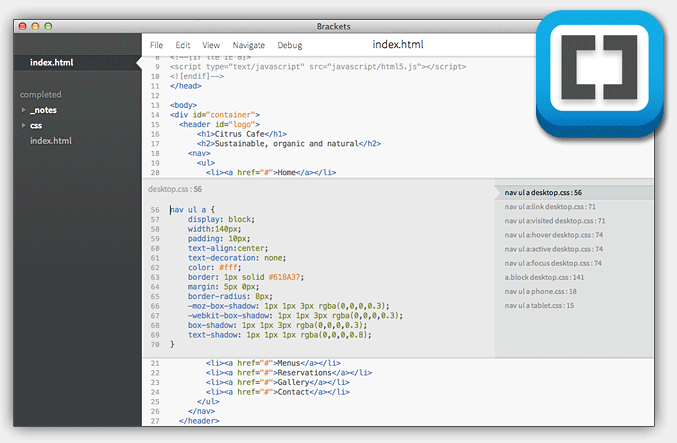
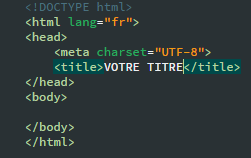
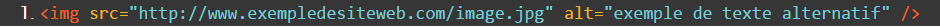

Definition : Le html est le langage de base pour créer des sites internet. Il permet d'afficher du texte, des images/vidéos ect...
Le langage html permet de decrire l'aspect visuel et le contenu d'une page web.
La nous avons un titre et deux paragraphes et un autre titre d'une taille plus petit a la fin.
Tout ce la ecrit dans des balises ouvrante et fermante. < >

Comme vous le voyer ci dessous nous avons bien notre premier titre, nos deux paragraphes et notre deuxieme titre plus petit a la fin.

Pour ecrire du code html nous avons besoin d'un editeur html comme notepad++ ou d'autre editeur plus perfectionné comme brackets, sublime text, ou encore atom (ces editeurs son gratuit). Un editeur html est un logiciel conçu pour facilliter la préparation et la modification de page ecrit en HTML
Voila ci dessous l'editeur de code Brackets
Les balises ouvrantes sont toujours de la forme < exemple > et les balises fermantes de la forme < / exemple > ici le mot (exemple) indique le nom de la balise.
Tous les éléments du contenu d’une page HTML sont encadrés par une balise ouvrante et une balise fermante, à part quelques exceptions (dont les plus notables sont la balise < br/ >, qui permet d’aller à la ligne, la balise < img > qui permet d’insérer une image dans la page HTML, et les balises < meta > et < link > sur lesquelles je reviendrai plus tard).
On commence toujours une page html avec l'instruction < !DOCTYPE html>. Le « doctype », qui constitue la déclaration initiale d’un document HTML, indique au navigateur la version du langage utilisé pour qu’il puisse l’interpréter selon les normes de la version concernée.
Tous les fichiers HTML commencent donc par la déclaration du doctype suivie par la balise ouvrante < html > et ils se terminent tous par la balise fermante < / html >.
Le corps du document, constitué par le code placé entre les balises < body >, détermine tout le contenu visible par l’internaute à l’intérieur de la fenêtre du navigateur : les textes, les liens, les images, éventuellement les sons et les vidéos. Mais si ton corps est visible, les pensées que tu formes dans ta tête sont invisibles. De même, les informations d’en-tête de ton document contenues entre les balises < head > ne sont pas directement visibles dans la fenêtre du navigateur, même si certaines d’entre elles ont une incidence sur la manière dont le contenu visible va s’afficher.
Parmi les informations contenues entre les balises < head > et < / head >, la première est destinée aux navigateurs. Il s’agit de leur indiquer le type d’encodage qui a été utilisé pour coder la page HTML. On emploie pour cela une balise < meta > avec l’attribut charset (« charset » signifie « jeu de caractères »).
le type d’encodage désormais préconisé pour les pages HTML est le UTF-8 qui permet d’écrire l’ensemble des caractères internationaux, comme par exemple le « é » du français et les autres caractères accentués. On renseignera donc l’attribut charset de la balise < meta > avec la valeur « utf-8 », Mais la plus importante des balises trouvant leur place dans la tête du document (« head ») est certainement la balise < title >. Il s’agit du titre de la page (« title » signifie « titre » en anglais), qui s’affiche dans la bordure en haut de la fenêtre du navigateur, et qui s’affiche également en tête des résultats des recherches que tu fais sur les moteurs de recherche comme Google.
Regarder ci dessous c'est exaxtemet ce qu'on vien de parler :

La balise body : C'est là que se trouve la partie principale de la page. Tout ce que nous écrirons ici sera affiché à l'écran. C'est à l'intérieur du corps que nous écrirons la majeure partie de notre code. C'est donc le corp de notre page web.
Pour les titres il existe plusieur taille, du plus gros au plus petit : h1,h2,h3,h4,h5,h6
< p > se place au début d’un paragraphe et < / p > se place à la fin du paragraphe comme ci dessous.
Pour faire des listes ordonné ont utilise la balise OL et LI comme ci-dessous

et pour les listes désordonné ont utilise la balise UL et LI :

Pour passer a la ligne ont utilise la balise < br >
Nous allons commencer notre premiere page
Tout d'abort créer un dossier et donner lui le nom que vous voulez, ensuite créer votre fichier.html a l'interieure de ce dossier : (nommer-le fichier.html ou index.html) comme ci dessous.

Ensuite ouvre le avec un editeur (celui de ton choix) et recopie le code suivant, que tu peux entièrement comprendre à présent :
Une page HTML est comme un arbre, les balises HTML s’imbriquent les unes dans les autres.
Plus technique si t'arrivent a comprendre : ci dessus : La balise < html > est l’ancêtre de toutes les autres balises et plus précisément le parent des balises
et . Les balises < head > et < body > sont les enfants de la balise < html >. La balise < head > est le parent des balises < meta > et < title >. Les balises < meta > et < title > sont des balises sœurs. Elles sont les descendantes des balises < html > et < head > et plus précisément les enfants de la balise < head >. La balise < body > est le parent des balises < p >. Les balises < p > sont des balises sœurs. Elles sont les descendantes des balises et et plus précisément les enfants de la balise < body > .Voyons à présent comment insérer une image dans une page web. On utilise une balise < img > ajouter une image dans votre dossier ou copier le lien d'une image a partir d'internet, ensuite donner le chemain de l'image comme ci dessous:
La balise < img > a deux attributs obligatoires, l’attribut src et l’attribut alt.
src signifie « source ». On doit le renseigner avec l’URL de l’image qui indique où se trouve l’image sur le web. Il est en effet possible d’afficher dans une page web une image se trouvant sur un autre serveur que celui qui héberge cette page.
alt signifie « texte alternatif ». On doit le renseigner avec un texte court décrivant l’image. Le texte alternatif est utile aux personnes malvoyantes ou non voyantes, qui utilisent des outils de lecture d’écran par synthèse vocale pour prendre connaissance du contenu des pages web. Ils donnent aussi des informations sur les images aux moteurs de recherche.
J'espere que mon tutoriel vous a plus, maintenant essayer de faire une page web avec tout ce que je vous est apris et suivez le tuto suivant pour conaitre comment donner du style a votre page ! ou vous pouvez retourner au menu principal :
Code :

Resultat dans un navigateur :